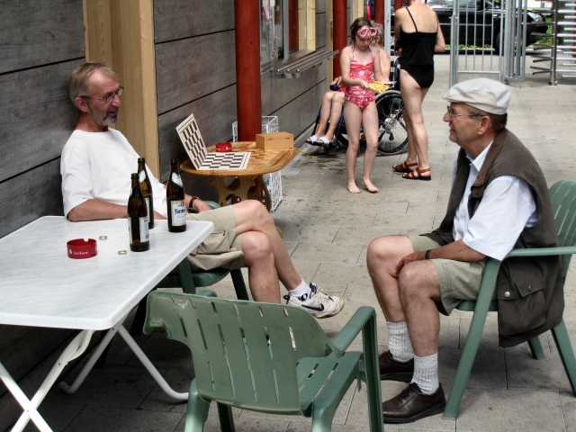
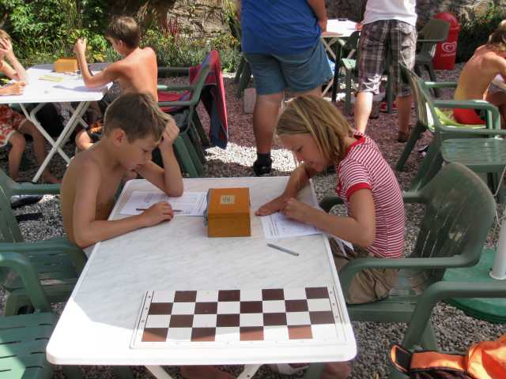

04.08.09 - 06.08.09
Laufenburger
Kindersommer

13 Kinder hatten sich angemeldet, 12 waren gekommen.

Erstmalig wurde der Brackeler Schachlehrgang eingesetzt.

Spiel und Spass standen natürlich auch dieses Jahr wieder im Vordergrund..

Zwischendurch wurde allerdings auch richtig gelernt!

Heinz und Hermann betrachten das Geschehen vom Rande.

Dann wurde es plötzlich ernst: Das Bauerndiplom war angesagt!

Die Köpfe rauchten bei hochsommerlichem Wetter.

Am Ende hatten alle
das Klassenziel erreicht: Das Bauerndiplom wird ausgehändigt.